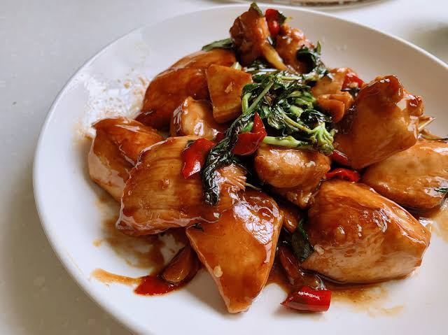

• 主料。帶骨土雞腿肉或去骨雞腿排約 500–600 克（切塊）。雞腿肉油脂豐富，久煮不柴且口感軟嫩。
• 辛香料。老薑 10 片、蒜頭 8–10 瓣（整顆去皮）、紅辣椒 1–2 根（斜切）、九層塔 1 大把（洗淨瀝乾）。
• 三杯醬汁（1:1:1）。黑麻油 3 大匙、醬油 3 大匙、米酒 3 大匙。
• 提味糖分。冰糖（或二砂） 1 大匙，用來增加焦糖色澤並中和鹹度。
1. 煎香雞肉。冷鍋下少許一般沙拉油（避免黑麻油高溫久煮變苦），將雞肉皮朝下煎至兩面金黃焦香後先盛出備用。
2. 煸香辛料。利用鍋中逼出的雞油，轉小火倒入黑麻油，放入老薑片煸至邊緣微捲，再下蒜頭炒出香氣。
3. 炒糖上色。加入冰糖小火拌炒至融化並呈現微焦糖色，接著把煎好的雞肉倒回鍋中翻炒均勻。
4. 煨煮收汁。沿鍋邊嗆入米酒與醬油，放入辣椒拌勻後蓋上鍋蓋，轉中小火燜煮約 8–10 分鐘。
5. 大火嗆香。開蓋轉大火將醬汁收至濃稠油亮，起鍋前關火，放入九層塔利用餘溫快速拌炒幾下即可盛盤。